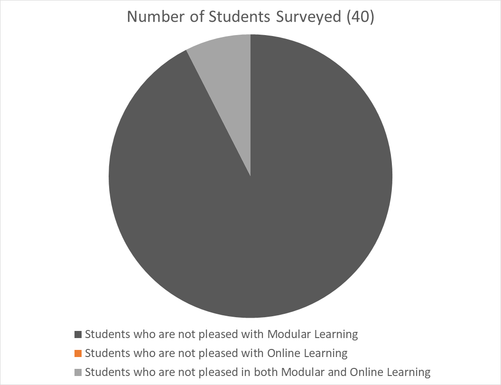

This Blog site is only for school group assinments purposes only. PLEASE ROTATE YOUR PHONE TO LANDSCAPE FOR BETTER VIEW.
On this website you can find information and guidance from Camalaniugan Blogspot regarding the current
outbreak of coronavirus disease (COVID-19) that was first reported from Wuhan, China, on 31 December 2019.
Covid- 19 spread like a smoke from a massive fire and become a threshold to create a new normal in education.
Students are now struggling to adjust to this new normal. They are overburdened with modules and activities.
The learning is not being imparted well to the students resulting on lack of knowledge. However, there is that
so called internet, where we can get such information or explanation on our given activities.
Covid cases is getting worst day by day and it keeps on attacking the education of students. It also and affects the
student's health. So far, data suggests that children under the age of 18 years represent about the reported cases,
with few deaths compared to other age groups and usually mild disease. However, cases of critical illness have been
reported. As with adults, pre-existing medical conditions have been suggested as a risk factor for severe disease and
intensive care admission in children. Further, studies are underway to assess the risk of infection in children.
Its has been 2 years since covid changed the world and how we used to live.
Some of these cases are the disruption of classes all around the world.
And months later the Department of Education(DepEd) announced the
continuation of classes will continue as a modular
class and some selected places for online schooling.
But it is now about a year and a few months since the Modular and Online Schooling has started.
What is the situation now? And what are the thoughts of the students that are experiencing this kind of Learning Method?
Our group surveyed 10 students per Barangay in the area of Camalaniugan,
Which is from Barangay Sapping, Barangay Baggao, Barangay Dugo, and Barangay Agusi.
We asked them the same questions like; Do you have any complaints regarding the Modular and Online Learning?

The ammount of students that agreed that Modular Learning is not effective is about 93% of the students surveyed, 3% of them are agreed that both learning methods are not effective
and 0% agreed that only Online Learning is not an effective method of learning.
While some of the students are being surveyed, some parents interfered and said that they also
dissagree with this kind of Learning method. They are talking about the Modular Learning making problems
for their children to keep up with the pace of the topic and would eventually fail some of its subjects.
Students with learning gap is the most crucial, specially students with lack of materials needed for
this kind of learning method. Leaving them behind and having nothing learned.
Student's Replies | Question: For You is Modular Learning Effective? & Is it hard?
Question: For You is Modular Learning Effective?
Student 1 ~ Well for me not much, because lots of students don't understand their lessons,
they're just answering without analyzing it. And lots of students are just using
Google or Brainly to search for answers and for searching about the lesson instead
of asking their subject teachers. That's why it is not that effective
Is it hard?
Student 1 ~ Yes, Because there is a deadline that you need to follow. And it is hard because
not all can understand the lessons in the module. Even if we ask for our parent's
help or our guardian's help, we still struggle. Because not all parents had graduated
or did not have the opportunity to study.
Question: For You is Modular Learning Effective?
Student 2 ~ No,students are having a hard time to do their activities because other student don't
have gadgets to use to research on a specific info they need. Some of the students now
are drowned in social media to flirt with assholes that's why some of their
modules are not yet finished.
The good effect of modular learning is that parents don't have to worry about of the
allowance of their children, and students can just chill at their houses, the bad effect
is that there are so many activities to do, some of students get stress because of it and
may lead to depression. Then one day they will just commit suicide. Why the fvck they need
to waste their lives if they can just chill and enjoy breathing?
BAD EFFECT
The Bad effect of Modular Learning is that we don't have much to learn and we
will just struggle at our lessons. This also adds to our mental health problems. Then the
others are wasting their time playing and browsing useless things. But these useless things
are their happiness, the one that relieves them their stress. The problem is many students
are abusing their use of these. And in some cases they are the cause of eye damages and
would eventually add to their stress and could cause depression.
And for kids and other students that are shy and not really good at socializing or interacting
with others would lead a bad effect for them and may also lead to depression.
Now, the negative effects of Modular learning, they're limited to the lessons only given in the module.
Modular learning doesn't have that much negative effects but that is one. But modular learning also has
a positive impact on us, You can do self learning without relying to someone because not any time there's someone
you can rely on. You can see your effort on answering your module. You have enough time to answer and relax (to avoid stress).
GOOD EFFECT
The Good Effect is that this is the only way for us to avoid the harm of the covid-19 virus.
This is also a help for the parents to reduce their expences. And to take a lot of time with
their family and be usefull at their homes.
Positive effect of online learning. Online learning gives our children a better start.
With virtual simulations and models, teachers are able to communicate subjects that may have
previously been out of reach. Video conferencing and social platforms allow students to communicate
with others from different countries and share information like never before. Where the negative
effects of online learning is that the student will likely lose his/her social capabilities, and
will also effect his/her eyesight in a negative manner. The student will lose their social capabilities
because of obvious reasons, first they're just staring a screen all day, second they won't be able to talk
to people in person because they're prohibited to go outside, and the other negative effect is the eyesight,
the reason is. They're STARING at a SCREEN that has RADIATION ALL DAY.
Good effects or Advantages of Modular learning and online Learning Summary
Modular and online learning have become the mode of learning since the onset of the pandemic.
This is advantageous on the part of the learners, the teachers, the families of the students
and the global society as a whole. Why? It is because the students and pupils just stay home,
thus keeping them safe from being infected with Covid-19 virus. They will not be carriers or
spreaders of this dreadful disease.
Another advantage of this is the fact that the learners don't have to hurry to go to school
because they just stay at home to do what is asked for their modules. They can also attend the
lecture class online, and they feel relaxed while viewing on their celphones or their internet.
They don't need to ask for allowance from their parents.
For me, this is the easiest way to learn. We can finish a course even without going to school.